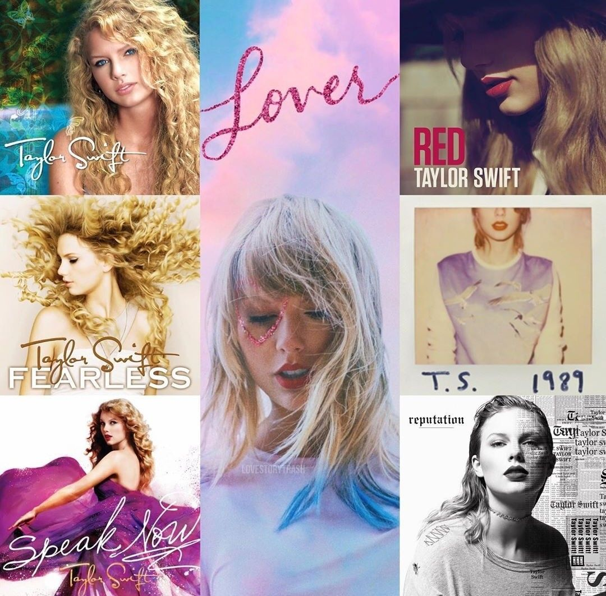

Premios
Taylor, a lo largo de su carrera, ha sido nominada a varios premios, entre ellos: premios Grammy, American Music Award, Billboard Music Award, entre otros..
Discografia
Discografía: La discografiá de Taylor Swift (cantante de géneros: Country y pop), está conformada por 10 (diez) álbumes de estudio y 2 (dos) regrabados, 3(tres) álbumes en directo y 17 (diecisiete) álbumes recopilatorios, entre ellos, los más populares: Taylor Swift, Folklore, lover, Evermore, entre otros y su más reciente álbum: Midnights, lanzado el 21 de Octubre de 2022
Filmografia

Entre todas sus producciones, grabó una película documental llamada: "Miss Americana", donde muestra su vida a lo largo de varios años de su carrera, su fecha de estreno fue el 23 de Enero de 2020, actualmente se puede ver en la plataforma de Netflix.